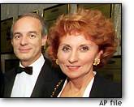

Greg Moore - 1975 - 1999
Krystalia - 1971 - 1999
Rick Stoeppelwerth - 1981 - 1999
No Picture
7 Dead in Honolulu - ? - 1999
No Picture
EgyptAir Flight 990 - ? - 1999
Salah Adam and his son Joshua
Richard Brokaw, 76, and Virginia Chaplin, 72

Claude Masson and his wife, Jeannine Bourdages
Eugenia Rhodes, 80
Gehed Mohamed, 12, left, and Walla Zeid, 19
Remembering victims of EgyptAir
Greets: Annie, SL, Meg, Ash, Erin, Mellie, Pulsar ®, Nichole
And
Pakistan HC, Level Seven, flipz, fuqrag, HNN, Attrition, and whoever else wants to be.
What Friends Are For - PhantasmP
Sometimes in life there are pit falls, but you always have a friend to help you though it.
Sometimes you make mistakes, but you always have a friend that won't judge you, and will
try there best to help you make sure you don't make the same mistake again.
Sometimes you don't think you can do something, but you always have a friend that will
tell you that you can. And they will stick by you until you can do it.
Sometimes you do something that you regret, but you always have a friend that will comfort
you, and help you understand that you shouldn't regret it, as we all do something in life
we regret, but we have to get past it, and move on, or at least understand that whatever
happened wasn't your fault.
But sometimes you can't get past something and move on, but you always have a friend that
will try their best to help you move on, or if it was something that they know is going to
be hard to get over, then they will always be there for you.
Sometimes you are sad and depressed, but you always have a friend that will make you feel
better, and try there hardest to cheer you up.
Sometimes you are upset about something, but you always have a friend that will take your
mind off of it, and make you feel better.
Sometimes you are mad, but you always have a friend that will make you understand. If your
mad at them they will try there best to make it up to you, and apologize. Or if your mad
at someone else, they will tell you to think it through the mind of the other person.
Sometimes you will think your friend is too busy for you, when really all you have to do
is tell them you need to talk, and they will stop whatever there doing to talk to you.
Sometimes your friend will move, but they will always keep in contact with you.
Sometimes you will loose contact with your friend, but you and your friend will always try
to get a hold of each other, and you'll probably meet again when you need each other the
most.
Sometimes your friend will die, but really the only way they can truly die, is if you let
them. Never forget about them, no matter how much it hurts, they will always be with you,
whether its in your heart, or in spirit.
Sometimes you want to end your life, because you don't think its worth living, and
everyone would be better off if you were dead, but you always have a friend who will tell
you that they love you, and that your life is worth living, because if you do die, so will
a piece of them. And they would tell you that they would be better off dead if you weren't
around.
Your friend will always guide you thought life's toughest problems... One way or another.
The Garden - PhantasmP
The garden was wet from the storm. The golden morning sunlight shines on the light green
leafs, drying them. The beautiful yellow, purple, and red flowers start to bloom. The air
starts to smell like spring again. Everything around you comes to life before your eyes.
As the dark storm clouds seem to be pushed away by the warmth of the sun. A rainbow
appears by the small patch of storm clouds. The birds start to sing, and the insects swarm
around the dampness in the shadows. I walk into the sunlight and feel the warmth of the
sun on my exposed skin. I look around and its almost like I realise for the first time
that everything if full of life, and just how important everything is, no matter how much
I dislike it, I now know to respect it. The Robin, The Fly, The Squrrel and all other
living creatures, animals or plants make this world what it is today, the world could be
an almost perfect place if humans never inhabited it. Then I wake up and look out the
window, almost expecting to see what I saw in my dreams, but I see the plants in the
horizion with tonns of smoke coming out, the yellow sky, the bare ground, and the sound's
of siruns. Then I relize just how much we have fucked up this world, and I go back to
sleep hoping to go back to my perfect garden.
<Admin> Look at the source and figure out how to get this back to normal, if you can't, then you don't deserve to have the job you have.
PHANTASMP